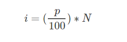
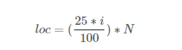
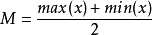
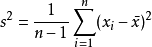
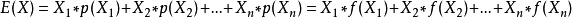
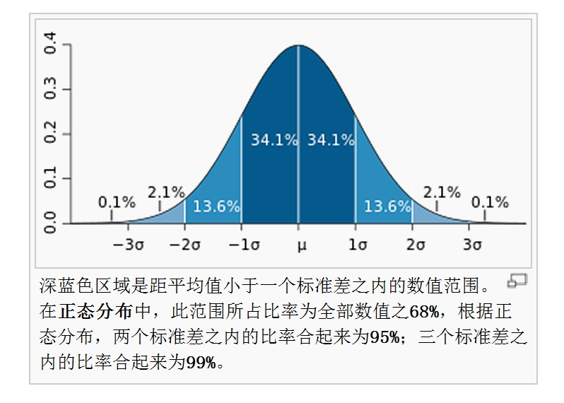

统计学基础
样本(sample)与总体(population)
研究中实际观测或调查的一部分个体称为样本，研究对象的全部称为总体。
位置的度量
主要采用平均数、中位数、众数、四分位数、百分位数来对数的分布进行描述。
算术平均数(mean)
平均数是用来表示一组数据集中趋势的量数,是一组数据中所有数据的和除以数据的个数。
算术平均数公式：
中位数(median)
中位数可以将数值集合划分为大小相等的上下两个部分。对于有限数集，将数集从小到大排列，如果数集包含数的个数为奇数取中间位置的数，否则取中间位置两个数的均值作为中位数。
众数(mode)
众数是数据集中出现次数最多的数。
百分位数
百分位数提供了数据如何散布在从最小值到最大值的区间上的信息。对于没有多个重复数值的数据，第p百分位数将数据分割成了两个部分:大约有%p的观测值比第p百分位数小;大约有(1-p%)的观测值比第p百分位数大。确定百分位数的下标：
四分位数
四分位数是百分位数的特例，包括25/50/75分为数，为Q1、Q2、Q3,其中，Q2就是数据集的平均数。其位置公式非常简单，参考百分位数即可：
变异程度的度量
极差(range)
极差是用来表示统计资料中的变异量数(measures of variation),用最大值减去最小值。
中程数(mid-range)
中程数是一组统计数据集中最大值与最小值的平均值。
方差(variance)
方差是在概率论和统计方差衡量随机变量或一组数据时离散程度的度量。概率论中方差用来度量随机变量和其数学期望（即均值）之间的偏离程度。统计中的方差（样本方差）是每个样本值与全体样本值的平均数之差的平方值的平均数。
总体方差：
样本方差：
标准差
标准差的算术平方根。由于方差是数据的平方，与检测值本身相差太大，人们难以直观的衡量，所以常用方差开根号换算回来这就是我们要说的标准差。
随机变量
简单来讲是指随机事件的数量表现。
离散型随机变量：在一定区间内变量的取值为有限个，或数值可以一一列举出来。
连续型随机变量：在一定区间内变量取值有无限个，或数值无法一一列举出来。
概率密度函数
描述一个连续型随机变量在确定的某个点附近的可能性的函数。
连续型随机变量的概率密度函数有如下性质：
由概率密度计算概率的公式为：
二项分布(Binomial distribution)
在概率论和统计学中，二项分布是n个独立的是/非试验中成功的次数的离散概率分布，其中每次试验的成功概率为p。
一般地，如果随机变量 $X$服从参数为$n$和$p$的二项分布，我们记$X\sim b(n,p)$或$X\sim B(n,p)$.n次试验中正好得到k次成功的概率由概率质量函数给出：$${\displaystyle f(k;n,p)=\Pr(X=k)={n \choose k}p^{k}(1-p)^{n-k}}$$
对于k = 0, 1, 2, …, n，其中 ${\displaystyle {n \choose k}={\frac {n!}{k!(n-k)!}}}$
期望
数学期望是试验中每次可能结果的概率乘以其结果的总和。大数定律规定，随着重复次数接近无穷大，数值的算术平均值几乎肯定地收敛于期望值。
离散型
离散型随机变量的一切可能的取值$x_i$与对应的概率$p(x_i)$乘积之和称为该离散型随机变量的数学期望，记为$E(x)$。类似于加权平均。公式： 二项分布$X\sim B(n,p)$的期望$E(X) = np$
连续型
设连续性随机变量$X$的概率密度函数为$f(x)$，若积分绝对收敛，则称积分$\int_{-\infty}^{\infty}xf(x)dx$的值为随机变量的数学期望，记为$E(X)$。$$E(x) = \int_{-\infty}^{\infty}xf(x)dx$$
泊松分布(Possion distribution)
若$X$服从参数为$\lambda$的泊松分布，记为$X \sim \pi(\lambda)$，或记为 $X \sim P(\lambda)$。
泊松分布适合用来描述单位时间内随机事件发生次数的概率分布。例如一个小时内接电话的次数。随机事件单位时间内发生次数的期望$E(X) = \lambda$，则其发生$k$次的概率可由泊松分布的概率质量函数表示为：$$P(X=k)=\frac{e^{-\lambda}\lambda^k}{k!}$$在二项分布中当实验次数趋近无穷时，二项分布可以近似为泊松分布。推导(wiki)
大数定律
大数定律又称大数法则、大数律，是描述相当多次数重复实验的结果的定律。根据这个定律知道，样本数量越多，则其算术平均值就有越高的机率接近期望值。但是样本间并不具有相干性。
正态分布/高斯分布/钟形曲线
若随机变量$X$服从一个位置参数为$\mu$、尺度参数为$\sigma$的正态分布，记为：$$X \sim N(\mu,\sigma^2)$$则其概率密度函数为：$$f(x) = \frac{1}{\sigma\sqrt{2\pi}}e^{-\frac{(x-\mu)^2}{2\sigma^2}}$$用$z$分数(表示离均值有多少个标准差)进行表达：$$f(x) = \frac{1}{\sigma\sqrt{2\pi}}e^{-\frac{1}{2}z^2},z = \frac{x-\mu}{\sigma}$$标准正态分布$\mu = 0,\sigma = 1$：$$f(x) = \frac{1}{\sqrt{2\pi}}e^{-\frac{1}{2}x^2}$$
$z score$与经验法则(Empirical Rule)/68-95-99.7
其中以对称的μ为中心，±σ范围的概率是68.3%。也就是说z=（x-μ）/σ在范围(-1,1)内，概率为68.3%。$$\int_{\mu-\sigma}^{\mu+\sigma}f(x)dx = 68.3\%$$也就是说z在范围(-1,1)内，概率为68.3%。
所谓的经验法则，也成为68-95-99.7法则，即以μ为中心，落在μ±σ的概率为68%，落在μ±2σ的概率为95%，落在μ±3σ的概率为99.7%。